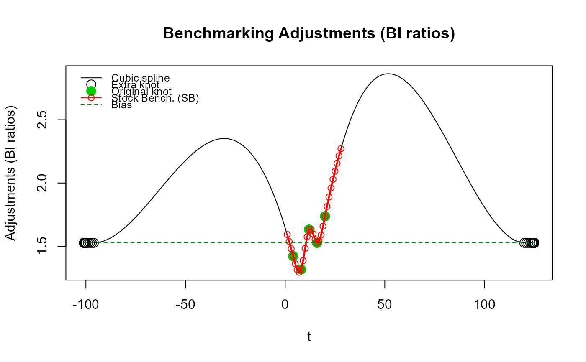

Function specifically aimed at benchmarking stock series where the benchmarks are anchor points covering a
single period of the indicator series. Benchmarks covering more than one period of the indicator series
cannot be used with this function. Function benchmarking() should be used instead to benchmark
non-stock series (flows).
Several stock series can be benchmarked in a single function call.
Note that functions stock_benchmarking() and benchmarking() mainly share the same arguments and
return the same type of object. Differences are listed below:
Argument
verboseis not defined forstock_benchmarking().Extra arguments defined for
stock_benchmarking():low_freq_periodicityn_low_freq_projproj_knots_rho_bd
The list returned by
stock_benchmarking()contains an extra (fourth) data frame:splineKnots
See section Details for more information on the similarities and differences of functions
stock_benchmarking() and benchmarking().
A direct equivalent of stock_benchmarking() does not exist in SAS\(^\circledR\) G-Series 2.0.
Usage
stock_benchmarking(
series_df,
benchmarks_df,
rho,
lambda,
biasOption,
bias = NA,
low_freq_periodicity = NA,
n_low_freq_proj = 1,
proj_knots_rho_bd = 0.995,
tolV = 0.001,
tolP = NA,
warnNegResult = TRUE,
tolN = -0.001,
var = "value",
with = NULL,
by = NULL,
constant = 0,
negInput_option = 0,
allCols = FALSE,
quiet = FALSE
)Arguments
- series_df
(mandatory)
Data frame, or object to be coerced to one, that contains the indicator time series data to be benchmarked. In addition to the series data variable(s), specified with argument
var, the data frame must also contain two numeric variables,yearandperiod, identifying the periods of the indicator time series.- benchmarks_df
(mandatory)
Data frame, or object to be coerced to one, that contains the benchmarks. In addition to the benchmarks data variable(s), specified with argument
with, the data frame must also contain four numeric variables,startYear,startPeriod,endYearandendPeriod, identifying the indicator time series periods covered by each benchmark.- rho
(mandatory)
Real number in the \([0,1]\) interval that specifies the value of the autoregressive parameter \(\rho\). See section Details for more information on the effect of parameter \(\rho\).
- lambda
(mandatory)
Real number, with suggested values in the \([-3,3]\) interval, that specifies the value of the adjustment model parameter \(\lambda\). Typical values are
lambda = 0.0for an additive model andlambda = 1.0for a proportional model.- biasOption
(mandatory)
Specification of the bias estimation option:
1: Do not estimate the bias. The bias used to correct the indicator series will be the value specified with argumentbias.2: Estimate the bias, display the result, but do not use it. The bias used to correct the indicator series will be the value specified with argumentbias.3: Estimate the bias, display the result and use the estimated bias to correct the indicator series. Any value specified with argumentbiaswill be ignored.
Argument
biasOptionis ignored whenrho = 1.0. See section Details for more information on the bias.- bias
(optional)
Real number, or
NA, specifying the value of the user-defined bias to be used for the correction of the indicator series prior to benchmarking. The bias is added to the indicator series with an additive model (argumentlambda = 0.0) while it is multiplied otherwise (argumentlambda != 0.0). No bias correction is applied whenbias = NA, which is equivalent to specifyingbias = 0.0whenlambda = 0.0andbias = 1.0otherwise. Argumentbiasis ignored whenbiasOption = 3orrho = 1.0. See section Details for more information on the bias.Default value is
bias = NA(no user-defined bias).- low_freq_periodicity
(optional)
Positive integer representing the number of periods defining the low (e.g., benchmarks) frequency for adding the extra spline knots (before the first benchmark and after the last benchmark). For example,
low_freq_periodicity = 3with monthly indicators would define quarterly knots. Annual knots are added whenlow_freq_periodicity = NA.Default value is
low_freq_periodicity = NA(annual knots).- n_low_freq_proj
(optional)
Nonnegative integer representing the number of low frequency knots (as defined with argument
low_freq_periodicity) to add at both ends (before the first benchmark and after the last benchmark) before starting to add high (indicator series) frequency knots.Default value is
n_low_freq_proj = 1.- proj_knots_rho_bd
(optional)
Bound that applies to the value specified with argument
rhoand determines the type of extra knots to be added at both ends (before the first benchmark and after the last benchmark). Whenrho > proj_knots_rho_bd, high (indicator series) frequency knots are used right away. Otherwise, whenrho <= proj_knots_rho_bd, low frequency knots (see argumentslow_freq_periodicityandn_low_freq_proj) are first projected on either side. Note that for quarterly stocks, the cube of the specifiedproj_knots_rho_bdvalue is actually used. Therefore, the value for argumentproj_knots_rho_bdshould correspond to monthly stock indicators; it is internally adjusted for quarterly stocks. This argument aims at reaching a compromise for the set periods outside (before or after) the provided benchmarks (anchor points), i.e., Denton-type (straight line) adjustments asrhoapproaches 1 (whenrho > proj_knots_rho_bd) and a natural looking (not overly contorted) spline otherwise (whenrho <= proj_knots_rho_bd). Section Details contains more information on this subject and some illustrative cases are provided in section Examples.Default value is
proj_knots_rho_bd = 0.995(\(0.995^3\) for quarterly stock indicators).- tolV, tolP
(optional)
Nonnegative real number, or
NA, specifying the tolerance, in absolute value or percentage, to be used for the validation of the output binding benchmarks (alterability coefficient of \(0.0\)). This validation compares the input binding benchmark values with the equivalent values calculated from the benchmarked series (output) data. ArgumentstolVandtolPcannot be both specified (one must be specified while the other must beNA).Example: to set a tolerance of 10 units, specify
tolV = 10, tolP = NA; to set a tolerance of 1%, specifytolV = NA, tolP = 0.01.Default values are
tolV = 0.001andtolP = NA.- warnNegResult
(optional)
Logical argument specifying whether a warning message is generated when a negative value created by the function in the benchmarked (output) series is smaller than the threshold specified by argument
tolN.Default value is
warnNegResult = TRUE.- tolN
(optional)
Negative real number specifying the threshold for the identification of negative values. A value is considered negative when it is smaller than this threshold.
Default value is
tolN = -0.001.- var
(optional)
String vector (minimum length of 1) specifying the variable name(s) in the indicator series data frame (argument
series_df) containing the values and (optionally) the user-defined alterability coefficients of the series to be benchmarked. These variables must be numeric.The syntax is
var = c("series1 </ alt_ser1>", "series2 </ alt_ser2>", ...). Default alterability coefficients of \(1.0\) are used when a user-defined alterability coefficients variable is not specified alongside an indicator series variable. See section Details for more information on alterability coefficients.Example:
var = "value / alter"would benchmark indicator series data frame variablevaluewith the alterability coefficients contained in variablealterwhilevar = c("value / alter", "value2")would additionally benchmark variablevalue2with default alterability coefficients of \(1.0\).Default value is
var = "value"(benchmark variablevalueusing default alterability coefficients of \(1.0\)).- with
(optional)
String vector (same length as argument
var), orNULL, specifying the variable name(s) in the benchmarks data frame (argumentbenchmarks_df) containing the values and (optionally) the user-defined alterability coefficients of the benchmarks. These variables must be numeric. Specifyingwith = NULLresults in using benchmark variable(s) with the same names(s) as those specified with argumentvarwithout user-defined benchmark alterability coefficients (i.e., default alterability coefficients of \(0.0\) corresponding to binding benchmarks).The syntax is
with = NULLorwith = c("bmk1 </ alt_bmk1>", "bmk2 </ alt_bmk2>", ...). Default alterability coefficients of \(0.0\) (binding benchmarks) are used when a user-defined alterability coefficients variable is not specified alongside a benchmark variable. See section Details for more information on alterability coefficients.Example:
with = "val_bmk"would use benchmarks data frame variableval_bmkwith default benchmark alterability coefficients of \(0.0\) to benchmark the indicator series whilewith = c("val_bmk", "val_bmk2 / alt_bmk2")would additionally benchmark a second indicator series using benchmark variableval_bmk2with the benchmark alterability coefficients contained in variablealt_bmk2.Default value is
with = NULL(same benchmark variable(s) as argumentvarusing default benchmark alterability coefficients of \(0.0\)).- by
(optional)
String vector (minimum length of 1), or
NULL, specifying the variable name(s) in the input data frames (argumentsseries_dfandbenchmarks_df) to be used to form groups (for BY-group processing) and allow the benchmarking of multiple series in a single function call. BY-group variables can be numeric or character (factors or not), must be present in both input data frames and will appear in all three output data frames (see section Value). BY-group processing is not implemented whenby = NULL. See "Benchmarking Multiple Series" in section Details for more information.Default value is
by = NULL(no BY-group processing).- constant
(optional)
Real number that specifies a value to be temporarily added to both the indicator series and the benchmarks before solving proportional benchmarking problems (
lambda != 0.0). The temporary constant is removed from the final output benchmarked series. E.g., specifying a (small) constant would allow proportional benchmarking withrho = 1(e.g., proportional Denton benchmarking) on indicator series that include values of 0. Otherwise, proportional benchmarking with values of 0 in the indicator series is only possible whenrho < 1. Specifying a constant with additive benchmarking (lambda = 0.0) has no impact on the resulting benchmarked data. The data variables in the graphTable output data frame include the constant, corresponding to the benchmarking problem that was actually solved.Default value is
constant = 0(no temporary additive constant).- negInput_option
(optional)
Handling of negative values in the input data for proportional benchmarking (
lambda != 0.0):0: Do not allow negative values with proportional benchmarking. An error message is displayed in the presence of negative values in the input indicator series or benchmarks and missing (NA) values are returned for the benchmarked series. This corresponds to the G-Series 2.0 behaviour.1: Allow negative values with proportional benchmarking but display a warning message.2: Allow negative values with proportional benchmarking without displaying any message.
Default value is
negInput_option = 0(do not allow negative values with proportional benchmarking).- allCols
(optional)
Logical argument specifying whether all variables in the indicator series data frame (argument
series_df), other thanyearandperiod, determine the set of series to benchmark. Values specified with argumentsvarandwithare ignored whenallCols = TRUE, which automatically implies default alterability coefficients, and variables with the same names as the indicator series must exist in the benchmarks data frame (argumentbenchmarks_df).Default value is
allCols = FALSE.- quiet
(optional)
Logical argument specifying whether or not to display only essential information such as warning messages, error messages and variable (series) or BY-group information when multiple series are benchmarked in a single call to the function. We advise against wrapping your
benchmarking()call withsuppressMessages()to further suppress the display of variable (series) or BY-group information when processing multiple series as this would make troubleshooting difficult in case of issues with individual series. Note that specifyingquiet = TRUEwould also nullify argumentverbose.Default value is
quiet = FALSE.
Value
The function returns is a list of four data frames:
series: data frame containing the benchmarked data (primary function output). BY-group variables specified with argument
bywould be included in the data frame but not alterability coefficient variables specified with argumentvar.benchmarks: copy of the input benchmarks data frame (excluding invalid benchmarks when applicable). BY-group variables specified with argument
bywould be included in the data frame but not alterability coefficient variables specified with argumentwith.graphTable: data frame containing supplementary data useful to produce analytical tables and graphs (see function
plot_graphTable()). It contains the following variables in addition to the BY-group variables specified with argumentby:varSeries: Name of the indicator series variablevarBenchmarks: Name of the benchmark variablealtSeries: Name of the user-defined indicator series alterability coefficients variablealtSeriesValue: Indicator series alterability coefficientsaltbenchmarks: Name of the user-defined benchmark alterability coefficients variablealtBenchmarksValue: Benchmark alterability coefficientst: Indicator series period identifier (1 to \(T\))m: Benchmark coverage periods identifier (1 to \(M\))year: Data point calendar yearperiod: Data point period (cycle) value (1 toperiodicity)rho: Autoregressive parameter \(\rho\) (argumentrho)lambda: Adjustment model parameter \(\lambda\) (argumentlambda)bias: Bias adjustment (default, user-defined or estimated bias according to argumentsbiasOptionandbias)periodicity: The maximum number of periods in a year (e.g. 4 for a quarterly indicator series)date: Character string combining the values of variablesyearandperiodsubAnnual: Indicator series valuesbenchmarked: Benchmarked series valuesavgBenchmark: Benchmark values divided by the number of coverage periodsavgSubAnnual: Indicator series values (variablesubAnnual) averaged over the benchmark coverage periodsubAnnualCorrected: Bias corrected indicator series valuesbenchmarkedSubAnnualRatio: Difference (\(\lambda = 0\)) or ratio (\(\lambda \ne 0\)) of the values of variablesbenchmarkedandsubAnnualavgBenchmarkSubAnnualRatio: Difference (\(\lambda = 0\)) or ratio (\(\lambda \ne 0\)) of the values of variablesavgBenchmarkandavgSubAnnualgrowthRateSubAnnual: Period to period difference (\(\lambda = 0\)) or relative difference (\(\lambda \ne 0\)) of the indicator series values (variablesubAnnual)growthRateBenchmarked: Period to period difference (\(\lambda = 0\)) or relative difference (\(\lambda \ne 0\)) of the benchmarked series values (variablebenchmarked)
splineKnots: set of
xandycoordinates (knots) used to estimate the natural cubic spline with functionstats::spline(). In addition to the original set of knots corresponding to binding benchmarks (anchor points), extra knots are also added at the beginning and end in order to deal with the benchmarking timeliness issue and approximate a slope=0 spline at both ends (see section Details). It contains the following variables in addition to the BY-group variables specified with argumentby:varSeries: Name of the indicator series variablevarBenchmarks: Name of the benchmark variablex: Cubic splinexcoordinatey: Cubic splineycoordinateextraKnot: Logical value identifying the extra knots added at the beginning and end
Rows for which
extraKnot == FALSEcorrespond to rows in the graphTable output data frame for whichmis not missing (notNA), withx = tandy = benchmarkedSubAnnualRatio.
Notes:
The output benchmarks data frame always contains the original benchmarks provided in the input benchmarks data frame. Modified nonbinding benchmarks, when applicable, can be recovered (calculated) from the output series data frame.
The function returns a
NULLobject if an error occurs before data processing could start. Otherwise, if execution gets far enough so that data processing could start, then an incomplete object would be returned in case of errors (e.g., output series data frame withNAvalues for the benchmarked data).The function returns "data.frame" objects that can be explicitly coerced to other types of objects with the appropriate
as*()function (e.g.,tibble::as_tibble()would coerce any of them to a tibble).
Details
Comparison with benchmarking()
With stock series, benchmarking() is known to produce breaks in the benchmarking adjustments at
periods corresponding to the benchmark stocks (anchor points). stock_benchmarking() addresses this issue
by working directly on the benchmarking adjustments. Smooth adjustments for stocks are ensured by
estimating a slope=0 cubic spline (a spline that is flat at the end knots) going through knots
corresponding to the difference (when argument lambda = 0.0) or ratio (otherwise) between the benchmarks
(anchor points) and the corresponding indicator series values. These knots are sometimes referred to as
BI (Benchmark-to-Indicator) differences or BI ratios. Interpolations from the estimated
cubic spline then provide the adjustments for the periods between benchmarks.
Arguments rho, lambda, biasOptionand bias play a similar role as in benchmarking(). However,
note that for stock_benchmarking(), argument rho only affects the results for periods outside of, or
around the, first and last benchmarks and lambda only takes two values in practice: lambda = 0.0 for
additive adjustments (spline interpolations where the knots are BI differences) or lambda = 1.0 for
multiplicative adjustments (spline interpolations where the knots are BI ratios). Any nonzero value for
lambda would return the same result as lambda = 1.0. Alterability coefficients also play a similar role
as in benchmarking() and have the same default values, i.e., \(1.0\) for the indicator series
(nonbinding values) and \(0.0\) for the benchmarks (binding benchmarks). However, similar to argument
lambda, alterability coefficients in this function only take two values in practice: \(0.0\) for binding
values or \(1.0\) for nonbinding values. Any nonzero alterability coefficient would return the same result
as a coefficient of \(1.0\). Another difference with benchmarking() is that user-defined
alterability coefficients are allowed even when rho = 1 with stock_benchmarking(). Finally, specifying a
nonbinding benchmark with stock_benchmarking() is equivalent to ignoring the benchmark entirely, as if the
benchmark was not included in the input benchmarks file. Compared to benchmarking(), this generally
translates into nonbinding benchmarks having a larger impact on the resulting benchmarked stocks.
Solution around the first and last benchmarks (benchmarking timeliness issue)
A slope=0 spline is chosen because it conceptually corresponds to the (popular) Denton benchmarking
approach (rho = 1). In order to provide a solution before the first benchmark and after the last benchmark
that is similar to benchmarking() when rho < 1, i.e., adjustments converging to the bias at a speed
dictated by argument rho, extra knots are added at both ends before estimating the spline. By default, one
extra low frequency (as defined with argument low_freq_periodicity) knot is added on each side (beginning
and end), i.e. one extra knot is added before the first benchmark and after the last benchmark. Then, high
(indicator series) frequency knots are added to cover the indicator series span to which is added an extra
year worth of high frequency knots. The value of all those extra knots is based on arguments rho, biasOption
and bias. This produces natural looking, smooth adjustments for periods outside of or around the first and last
benchmarks that gradually converge to the bias, similarly to benchmarking(). The number of extra low
frequency knots to be added can be modified with argument n_low_freq_proj. Using high frequency knots right
away (n_low_freq_proj = 0) would produce the same projected adjustments as benchmarking(). However,
note that this tends to produce an unnatural looking (overly contorted) spline around the first and last
benchmarks that could be substantially revised once the next benchmark is available. Using the default
n_low_freq_proj = 1 generally works better. However, when rho is close to 1 (see argument proj_knots_rho_bd),
high frequency knots are immediately added on each side in order to ensure Denton-type (straight line) projected
adjustments for periods outside of the first and last benchmarks. Finally, a slope=0 cubic spline is fitted through
the (original and extra) knots. Note that in practice, the slope=0 spline is actually approximated by
replicating the value of the end knots 100 times within the following period (at a frequency corresponding
to 100 times the indicator series frequency).
A natural spline at the original end knots (first and last benchmarks) can be approximated by specifying
a large value for argument low_freq_periodicity. The larger the value of low_freq_periodicity, the more
the cubic spline at the end knots will behave like a natural spline (2nd derivative equal to 0
at the end knots, i.e., a spline that keeps a constant slope at the end knots as opposed to being flat like
a slope=0 spline).
In summary, the projected adjustments are controlled with arguments rho, bias (and biasOption),
n_low_freq_proj, proj_knots_rho_bd and low_freq_periodicity:
Default values for these arguments produce
benchmarking()function-like projected adjustments (reasonably slow convergence to the bias).Smaller values of
rhowould generate faster convergence to the bias.Specifying a user-defined bias with argument
biaswhenrho < 1is another way to influence the shape of the projected adjustments.Specifying
rho = 1produce Denton-like projected adjustments (repeated first/last adjustments without convergence to the bias).Specifying a large value for
low_freq_periodicitygenerates projected adjustments that behave more like a natural spline, i.e., adjustments that continue in the same direction at the first/last benchmark. The larger the value oflow_freq_periodicity, the more the projected adjustments keep on going in the same direction before turning around.
Note on revisions to the benchmarking adjustments
benchmarking() adjustments would not be revised if all future benchmarks were to fall exactly on the
projected ones (based on the bias and value of rho) and the bias was fixed. The same could be achieved
with stock_benchmarking() if enough low (e.g., benchmarks) frequency knots were projected. The problem
with this approach, however, is that the projected adjustments may not look natural as the spline may
oscillate more than desired around the projected knots. This is clearly noticeable as rho approaches 1
and the spline oscillates around the horizontally aligned projected knots instead of being aligned in a
perfectly straight line. The default implementation of the spline around the first and last benchmarks
described previously aims at reaching a best compromise solution:
a natural looking spline around the end knots avoiding oscillations and excessive contortions;
small revisions to the spline if the next benchmark is close to the projected one when
rhois far enough from 1 (rho <= proj_knots_rho_bd);projected adjustments that are in a straight line (free of oscillations) as
rhoapproaches 1 (rho > proj_knots_rho_bd).
Subsections Benchmarking Multiple Series, Arguments constant and negInput_option and Treatment
of Missing (NA) Values at the end of the benchmarking() Details section are also relevant for
stock_benchmarking(). Consult them as necessary.
Finally, note that the cubic spline associated to the stock_benchmarking() adjustments can be conveniently
plotted with plot_benchAdj(). The latter is used in the Examples to illustrate some of the topics discussed
above.
References
Statistics Canada (2012). "Chapter 5: Benchmarking Stock". Theory and Application of Benchmarking (Course code 0436). Statistics Canada, Ottawa, Canada.
Examples
# Quarterly stock series (same pattern repeated every year)
my_series <- ts_to_tsDF(ts(rep(c(85, 95, 125, 95), 7),
start = c(2013, 1),
frequency = 4))
head(my_series)
#> year period value
#> 1 2013 1 85
#> 2 2013 2 95
#> 3 2013 3 125
#> 4 2013 4 95
#> 5 2014 1 85
#> 6 2014 2 95
# Annual benchmarks (end-of-year stocks)
my_benchmarks <- ts_to_bmkDF(ts(c(135, 125, 155, 145, 165),
start = 2013,
frequency = 1),
discrete_flag = TRUE,
alignment = "e",
ind_frequency = 4)
my_benchmarks
#> startYear startPeriod endYear endPeriod value
#> 1 2013 4 2013 4 135
#> 2 2014 4 2014 4 125
#> 3 2015 4 2015 4 155
#> 4 2016 4 2016 4 145
#> 5 2017 4 2017 4 165
# Benchmark using...
# - recommended `rho` value for quarterly series (`rho = 0.729`)
# - proportional model (`lambda = 1`)
# - bias-corrected indicator series with the estimated bias (`biasOption = 3`)
# ... with `benchmarking()` ("Proc Benchmarking" approach)
out_PB <- benchmarking(my_series,
my_benchmarks,
rho = 0.729,
lambda = 1,
biasOption = 3)
#>
#>
#> --- Package gstest 3.0.0 - (EN) 'G-Series' in 'R' | (FR) 'G-Séries' en 'R' ---
#> Created on April 8, 2025, at 3:40:01 PM EDT
#> URL: https://ferlmic.github.io/gstest/en/
#> https://ferlmic.github.io/gstest/fr/
#> Email: g-series@statcan.gc.ca
#>
#> benchmarking() function:
#> series_df = my_series
#> benchmarks_df = my_benchmarks
#> rho = 0.729
#> lambda = 1
#> biasOption = 3 (Calculate bias, use calculated bias)
#> bias (ignored)
#> tolV = 0.001 (default)
#> warnNegResult = TRUE (default)
#> tolN = -0.001 (default)
#> var = value (default)
#> with = NULL (default)
#> by = NULL (default)
#> verbose = FALSE (default)
#> (*)constant = 0 (default)
#> (*)negInput_option = 0 (default)
#> (*)allCols = FALSE (default)
#> (*)quiet = FALSE (default)
#> (*) indicates new arguments in G-Series 3.0
#> Number of observations in the BENCHMARKS data frame .............: 5
#> Number of valid observations in the BENCHMARKS data frame .......: 5
#> Number of observations in the SERIES data frame .................: 28
#> Number of valid observations in the SERIES data frame ...........: 28
#> BIAS = 1.526316 (calculated)
# ... with `stock_benchmarking()` ("Stock Benchmarking" approach)
out_SB <- stock_benchmarking(my_series,
my_benchmarks,
rho = 0.729,
lambda = 1,
biasOption = 3)
#>
#>
#> --- Package gstest 3.0.0 - (EN) 'G-Series' in 'R' | (FR) 'G-Séries' en 'R' ---
#> Created on April 8, 2025, at 3:40:01 PM EDT
#> URL: https://ferlmic.github.io/gstest/en/
#> https://ferlmic.github.io/gstest/fr/
#> Email: g-series@statcan.gc.ca
#>
#> stock_benchmarking() function:
#> series_df = my_series
#> benchmarks_df = my_benchmarks
#> rho = 0.729
#> lambda = 1
#> biasOption = 3 (Calculate bias, use calculated bias)
#> bias (ignored)
#> low_freq_periodicity = NA (default)
#> n_low_freq_proj = 1 (default)
#> proj_knots_rho_bd = 0.995 (default)
#> tolV = 0.001 (default)
#> warnNegResult = TRUE (default)
#> tolN = -0.001 (default)
#> var = value (default)
#> with = NULL (default)
#> by = NULL (default)
#> constant = 0 (default)
#> negInput_option = 0 (default)
#> allCols = FALSE (default)
#> quiet = FALSE (default)
#> Number of observations in the BENCHMARKS data frame .............: 5
#> Number of valid observations in the BENCHMARKS data frame .......: 5
#> Number of observations in the SERIES data frame .................: 28
#> Number of valid observations in the SERIES data frame ...........: 28
#> BIAS = 1.526316 (calculated)
# Compare the benchmarking adjustments of both approaches
plot_benchAdj(PB_graphTable = out_PB$graphTable,
SB_graphTable = out_SB$graphTable)
# Have you noticed how smoother the `stock_benchmarking()` adjustments are compared
# to the `benchmarking()` ones?
# The gain in the quality of the resulting benchmarked stocks might not necessarily
# be obvious in this example
plot(out_SB$graphTable$t, out_SB$graphTable$benchmarked,
type = "b", col = "red", xlab = "t", ylab = "Benchmarked Stock")
lines(out_PB$graphTable$t, out_PB$graphTable$benchmarked,
type = "b", col = "blue")
legend(x = "topleft", bty = "n", inset = 0.05, lty = 1, pch = 1,
col = c("red", "blue"), legend = c("out_SB", "out_PB"))
title("Benchmarked Stock")
# What about cases where a flat indicator is used, which may happen in practice
# in absence of a good indicator of the quarterly (sub-annual) movement?
my_series2 <- my_series
my_series2$value <- 1 # flat indicator
head(my_series2)
#> year period value
#> 1 2013 1 1
#> 2 2013 2 1
#> 3 2013 3 1
#> 4 2013 4 1
#> 5 2014 1 1
#> 6 2014 2 1
out_PB2 <- benchmarking(my_series2,
my_benchmarks,
rho = 0.729,
lambda = 1,
biasOption = 3,
quiet = TRUE) # don't show the function header
out_SB2 <- stock_benchmarking(my_series2,
my_benchmarks,
rho = 0.729,
lambda = 1,
biasOption = 3,
quiet = TRUE) # don't show the function header
plot(out_SB2$graphTable$t, out_SB2$graphTable$benchmarked,
type = "b", col = "red", xlab = "t", ylab = "Benchmarked Stock")
lines(out_PB2$graphTable$t, out_PB2$graphTable$benchmarked,
type = "b", col = "blue")
legend(x = "bottomright", bty = "n", inset = 0.05, lty = 1, pch = 1,
col = c("red", "blue"), legend = c("out_SB2", "out_PB2"))
title("Benchmarked Stock - Flat Indicator")
# The awkwardness of the benchmarked stocks produced by `benchmarking()` suddenly
# becomes obvious. That's because the benchmarked series corresponds to the
# benchmarking adjustments when using a flat indicator (e.g., a series on 1's
# with proportional benchmarking):
plot_benchAdj(PB_graphTable = out_PB2$graphTable,
SB_graphTable = out_SB2$graphTable)
# The shortcomings of the "Proc Benchmarking" approach (function `benchmarking()`)
# with stocks is also quite noticeable in this case when looking at the resulting
# quarterly growth rates, which are conveniently produced by `plot_graphTable()`.
# Pay particular attention to the transition in the growth rates from Q4 to Q1
# every year in the generated PDF graphs.
plot_graphTable(out_PB2$graphTable, file.path(tempdir(), "PB_stock_flat_ind.pdf"))
#>
#> Generating the benchmarking graphics. Please be patient...
#> Benchmarking graphics generated for 1 series in the following PDF file:
#> %TEMP%\Rtmp0M5DK2\PB_stock_flat_ind.pdf
plot_graphTable(out_SB2$graphTable, file.path(tempdir(), "SB_stock_flat_ind.pdf"))
#>
#> Generating the benchmarking graphics. Please be patient...
#> Benchmarking graphics generated for 1 series in the following PDF file:
#> %TEMP%\Rtmp0M5DK2\SB_stock_flat_ind.pdf
# Illustrate approximating a natural cubic spline at the original end knots (first and
# last benchmarks) by specifying a large `low_freq_periodicity` value.
out_SB3 <- stock_benchmarking(my_series,
my_benchmarks,
rho = 0.729,
lambda = 1,
biasOption = 3,
# Large value to approximate a natural cubic spline
low_freq_periodicity = 100,
quiet = TRUE)
plot_benchAdj(SB_graphTable = out_SB3$graphTable,
SB_splineKnots = out_SB3$splineKnots,
legendPos = "topleft")

# Illustrate "oscillations" of the cubic spline beyond the original end knots with
# Denton-type benchmarking (`rho ~ 1`) caused by using low frequency (annual) extra knots.
out_SB4 <- stock_benchmarking(my_series,
my_benchmarks,
rho = 0.999,
lambda = 1,
biasOption = 3,
# Use 3 annual extra knots first
n_low_freq_proj = 3,
proj_knots_rho_bd = 1,
quiet = TRUE)
plot_benchAdj(SB_graphTable = out_SB4$graphTable,
SB_splineKnots = out_SB4$splineKnots)
 # No "oscillations" with the default `proj_knots_rho_bd` value because high frequency
# (quarterly) extra knots are used right away (`n_low_freq_proj` is ignored) since
# `rho = 0.999` exceeds the default `proj_knots_rho_bd` value (0.995^3 for quarterly data).
# These projected adjustments are more in line with Denton-type adjustments (straight line).
out_SB4b <- stock_benchmarking(my_series,
my_benchmarks,
rho = 0.999,
lambda = 1,
biasOption = 3,
quiet = TRUE)
plot_benchAdj(SB_graphTable = out_SB4b$graphTable,
SB_splineKnots = out_SB4b$splineKnots)
# Illustrate "contortions" of the cubic spline around the original end knots caused
# by using high frequency extra knots right away (`n_low_freq_proj = 0`), i.e., using
# the same projected adjustments as those that would be obtained with `benchmarking()`.
#
# To exacerbate the phenomenon, we'll use monthly data (11 periods between each annual
# benchmark compared to only 3 for quarterly data, i.e., a less constrained spline)
# and a rather small value for `rho` (0.5 < 0.9 = recommended value for monthly data)
# for a faster convergence to the bias of the projected adjustments.
yr_vec <- unique(my_series$year)
my_series3 <- data.frame(year = rep(yr_vec, each = 12),
period = rep(1:12, length(yr_vec)),
value = rep(1, 12 * length(yr_vec))) # flat indicator
my_benchmarks2 <- my_benchmarks
my_benchmarks2[c("startPeriod", "endPeriod")] <- 12
out_SB5 <- stock_benchmarking(my_series3,
my_benchmarks2,
rho = 0.5,
lambda = 1,
biasOption = 3,
# Use monthly extra knots right away
n_low_freq_proj = 0,
quiet = TRUE)
plot_benchAdj(SB_graphTable = out_SB5$graphTable,
SB_splineKnots = out_SB5$splineKnots)
# No "oscillations" with the default `proj_knots_rho_bd` value because high frequency
# (quarterly) extra knots are used right away (`n_low_freq_proj` is ignored) since
# `rho = 0.999` exceeds the default `proj_knots_rho_bd` value (0.995^3 for quarterly data).
# These projected adjustments are more in line with Denton-type adjustments (straight line).
out_SB4b <- stock_benchmarking(my_series,
my_benchmarks,
rho = 0.999,
lambda = 1,
biasOption = 3,
quiet = TRUE)
plot_benchAdj(SB_graphTable = out_SB4b$graphTable,
SB_splineKnots = out_SB4b$splineKnots)
# Illustrate "contortions" of the cubic spline around the original end knots caused
# by using high frequency extra knots right away (`n_low_freq_proj = 0`), i.e., using
# the same projected adjustments as those that would be obtained with `benchmarking()`.
#
# To exacerbate the phenomenon, we'll use monthly data (11 periods between each annual
# benchmark compared to only 3 for quarterly data, i.e., a less constrained spline)
# and a rather small value for `rho` (0.5 < 0.9 = recommended value for monthly data)
# for a faster convergence to the bias of the projected adjustments.
yr_vec <- unique(my_series$year)
my_series3 <- data.frame(year = rep(yr_vec, each = 12),
period = rep(1:12, length(yr_vec)),
value = rep(1, 12 * length(yr_vec))) # flat indicator
my_benchmarks2 <- my_benchmarks
my_benchmarks2[c("startPeriod", "endPeriod")] <- 12
out_SB5 <- stock_benchmarking(my_series3,
my_benchmarks2,
rho = 0.5,
lambda = 1,
biasOption = 3,
# Use monthly extra knots right away
n_low_freq_proj = 0,
quiet = TRUE)
plot_benchAdj(SB_graphTable = out_SB5$graphTable,
SB_splineKnots = out_SB5$splineKnots)
 # No excessive "contortions" around the original end knots with the default
# `n_low_freq_proj = 1`, i.e., use 1 low frequency (annual) extra knot first.
out_SB5b <- stock_benchmarking(my_series3,
my_benchmarks2,
rho = 0.5,
lambda = 1,
biasOption = 3,
quiet = TRUE)
plot_benchAdj(SB_graphTable = out_SB5b$graphTable,
SB_splineKnots = out_SB5b$splineKnots)
# To even better highlight the potential excessive "contortions" of the cubic spline
# when enforcing the `benchmarking()` projected adjustment (i.e., low frequency extra
# knots right away with `n_low_freq_proj = 0`), let's plot the previous two sets of
# adjustments on the same plot (the blue line corresponds to the `n_low_freq_proj = 0`
# case, i.e., the `benchmarking()` projected adjustments while the red line corresponds
# to the default `stock_benchmarking()` adjustments, i.e., `n_low_freq_proj = 1`).
plot_benchAdj(PB_graphTable = out_SB5$graphTable,
SB_graphTable = out_SB5b$graphTable,
legend = NULL)
# No excessive "contortions" around the original end knots with the default
# `n_low_freq_proj = 1`, i.e., use 1 low frequency (annual) extra knot first.
out_SB5b <- stock_benchmarking(my_series3,
my_benchmarks2,
rho = 0.5,
lambda = 1,
biasOption = 3,
quiet = TRUE)
plot_benchAdj(SB_graphTable = out_SB5b$graphTable,
SB_splineKnots = out_SB5b$splineKnots)
# To even better highlight the potential excessive "contortions" of the cubic spline
# when enforcing the `benchmarking()` projected adjustment (i.e., low frequency extra
# knots right away with `n_low_freq_proj = 0`), let's plot the previous two sets of
# adjustments on the same plot (the blue line corresponds to the `n_low_freq_proj = 0`
# case, i.e., the `benchmarking()` projected adjustments while the red line corresponds
# to the default `stock_benchmarking()` adjustments, i.e., `n_low_freq_proj = 1`).
plot_benchAdj(PB_graphTable = out_SB5$graphTable,
SB_graphTable = out_SB5b$graphTable,
legend = NULL)